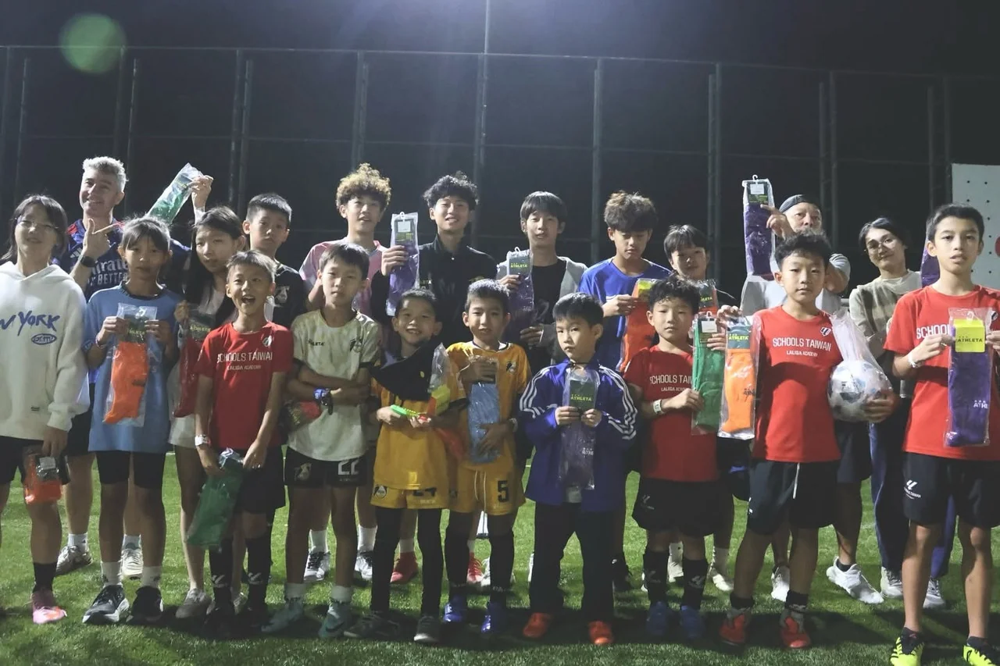
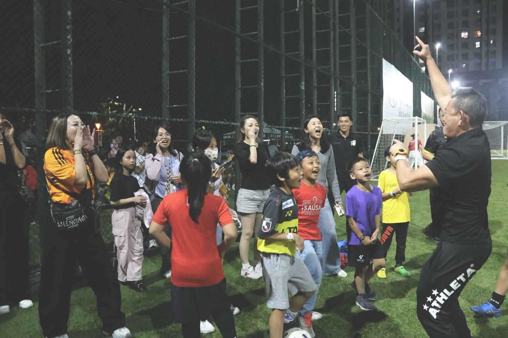
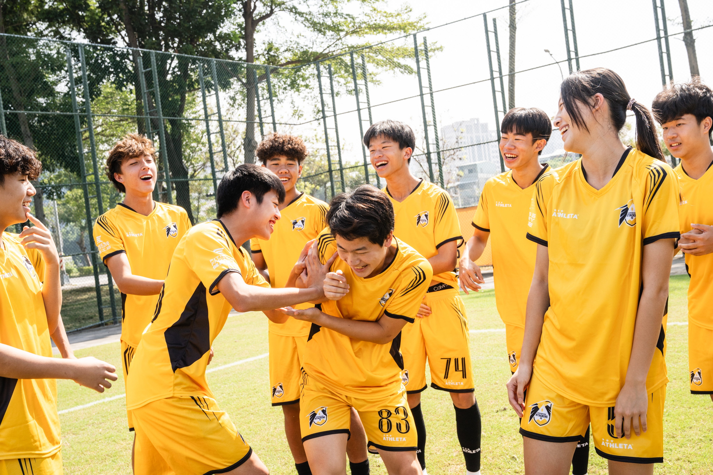

2026 · Attackers YEAR-END PARTY
2026.12.27SUNDAY / 17:30—20:00





OUR TEAM. OUR FAMILY. OUR MOMENTS.
MORE THAN FOOTBALL
球場上的隊友，
球場下的一家人。
足球讓我們相遇，陪伴讓我們走得更遠。邀請小球員、家長與教練，一起享用美食、聽音樂、玩遊戲，為這一年共同走過的時光，留下美好回憶！(❁´◡`❁)
01 / FOOD
一起分享美味
美食、自助餐與酒水飲料，讓相聚多一點滋味!
02 / Year-End Awards
青訓年度頒獎
榮耀之夜💫 表揚年度傑出球員，見證成長與突破
03 / PLAY
一起玩足球・交換禮物
教練團帶來趣味足球遊戲，邀請大小朋友同樂；交換彼此精心準備的禮物，讓驚喜與歡笑延續整晚！
YOUR INVITATION
把這一晚，留給我們。
DATE & TIME
2026 年 12 月 27 日（日）
17:30—20:00
LOCATION
高雄市楠梓區高雄大學路 8 號
停車場
年末相聚穿著
請穿著全套先鋒訓練服，當天如果天氣冷，可以自行加穿保暖衣物唷！
交換禮物
自由參加，想一起交換禮物的朋友，請帶一份 300 元以下的小禮物，記得先包裝好唷！
成人 NT$700 ／ 學生 NT$300（高中及以下）Attackers 俱樂部小球員、3 歲（含）以下幼兒免費
現場提供酒精飲料；若將飲酒，建議搭車前來。酒後不開車。
COUNT US IN
這次相聚，
也要有你。
填寫出席資訊，和我們一起度過年末相聚之夜。
同家庭多位球員可在姓名欄以「、」分隔。付費學生不包含免費球員或已計入的免費幼兒。
確認送出結果
請以 Google 下方顯示的確認訊息判斷是否已收件，勿重複送出。若無法顯示，請聯絡俱樂部核對。